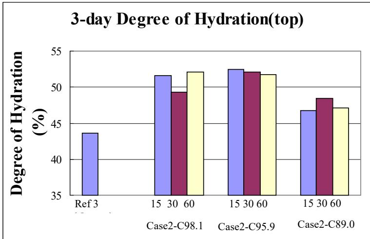
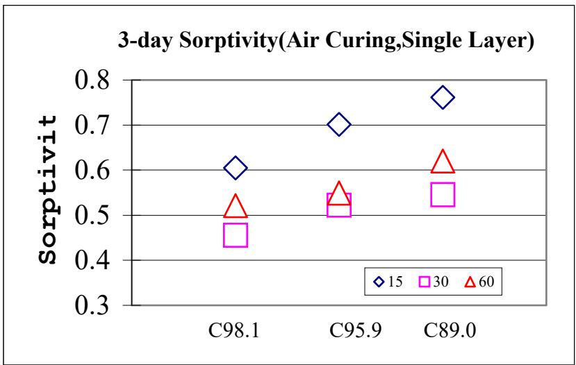
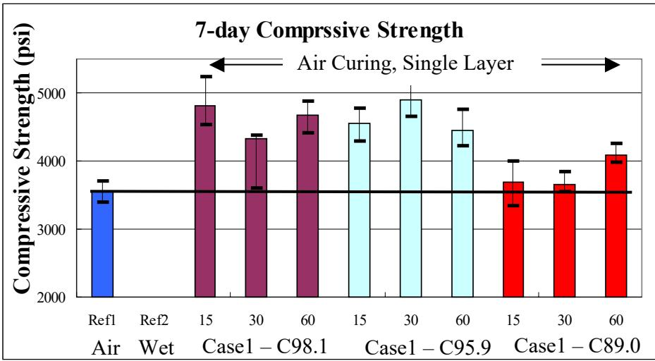
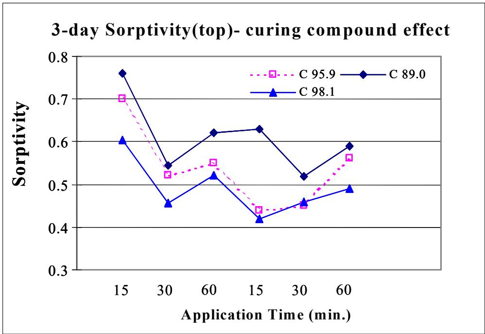
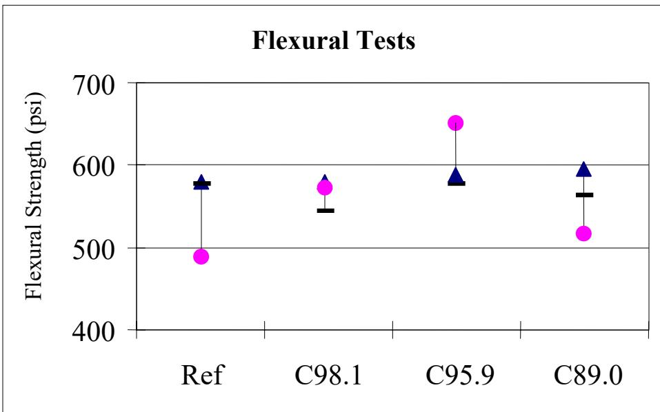

Curing Compounds
Curing compounds are topical treatments applied to freshly placed concrete that form a continuous sealing film on the surface. These materials typically consist of waxes, resins, or polymers emulsified in water or dissolved in solvents, which leave behind an intact membrane after the carrier evaporates [1]. The primary mechanism involves retaining moisture and heat within the concrete matrix to facilitate cement hydration while mitigating early-age shrinkage caused by environmental factors such as wind and solar radiation [1] [2]. Performance characteristics vary based on chemical composition and physical attributes, influencing the durability of the barrier and its ability to prevent excessive water loss under diverse conditions [1] [2].
CP Tech Center reports covering “Curing Compounds” also include the following subtopics: Efficiency Index.
Curing compounds function by creating barriers that preserve moisture within fresh concrete, ensuring proper hydration and strength development. The Efficiency Index measures how effectively a curing compound forms this membrane to retain moisture and prevent evaporation from the concrete surface.
Sources (12)
Sub-concepts (1)
Key findings
- Demonstrated that application timing is critical for effectiveness, requiring immediate coverage after finishing to prevent membrane absorption issues or bleeding, particularly in hot environments [1] [3].
- Established that the Efficiency Index provides a more reliable evaluation of curing compound performance than standard water retention tests, with high-efficiency variants demonstrating superior moisture retention and compressive strength gains [1].
- Revealed that sorptivity testing serves as a superior indicator for evaluating subtle microstructural changes and curing effectiveness compared to less sensitive moisture content measurements [1].
- Showed that while curing compounds are viable for semi-flowable self-consolidating concrete, they require additional protection against rain-induced moisture loss, making moist curing methods preferable in adverse weather [4].
- Identified soybean oil as a potential effective alternative to standard white pigment compounds for pervious concrete, capable of enhancing surface abrasion resistance and flexural strength where plastic sheeting is impractical [5].
- Observed that extended curing duration delays the onset of warping and reduces early-age stresses, although membrane degradation over time can lead to increased drying shrinkage rates [2].
- Recommended poly(alpha-methylstyrene) as a superior material for mitigating long-term shrinkage stability compared to conventional wax- or resin-based compounds [2].
Performance Evaluation, Application Constraints, and Durability Impacts
Evidence: 12 reports (10 primary)
Liquid membrane-forming curing compounds function by sealing the concrete surface to retain moisture, which is essential for facilitating cement hydration and ensuring proper strength development [1]. The effectiveness of these materials depends on their ability to maintain an intact barrier against environmental factors such as wind and solar radiation that accelerate moisture loss [2]. Different chemical compositions offer varying degrees of long-term performance and resistance to degradation over time, influencing the durability impacts on the concrete substrate [2].
The figure below illustrates how this curing process influences the degree of hydration when compared to air curing.
 Effect of Curing Compound on Degree of Hydration—Air Curing [1]
Effect of Curing Compound on Degree of Hydration—Air Curing [1]
The figure displays the degree of hydration for concrete specimens cured under different conditions, including air curing and wet curing. Specimens treated with a single-layer application of curing compound (Case 1) show significantly higher degrees of cement hydration compared to the reference specimen cured in air without the compound.
Research problem — The industry lacks reliable standard testing methods to evaluate curing compound effectiveness under field conditions, as existing laboratory tests suffer from severe precision issues and conventional strength metrics fail to capture the near-surface microstructural changes critical for durability [1]. Application constraints such as timing delays, weather exposure, and surface geometry significantly compromise moisture retention, leading to non-uniform shrinkage, early-age cracking, and premature deterioration of pavement textures [6] [7] [8] [9] [10]. Selecting curing compounds requires balancing moisture retention with functional surface requirements, as standard membrane-forming agents can block pollutant interaction in photocatalytic concrete or alter freeze-thaw durability by modifying fluid transport and salt accumulation behaviors [5] [11] [12] [2].
The following figure illustrates how curing compounds influence the degree of hydration under oven-cured conditions.

3-day Degree of Hydration (top) [1]The figure displays a bar chart comparing the degree of hydration for a reference specimen and three different curing compound cases under oven curing conditions. The data indicates that specimens treated with single-layer applications of curing compounds achieved higher degrees of cement hydration compared to the untreated reference specimen. This result demonstrates that liquid membrane-forming curing compounds effectively retain moisture to facilitate cement hydration even under hot weather conditions.
State of the art — The field is transitioning from prescriptive specifications to performance-based standards that prioritize in-place properties and constructability, although a lack of reliable standard testing methods remains a significant challenge for evaluating curing effectiveness [1] [6]. Performance evaluation increasingly relies on sorptivity as a sensitive indicator of moisture retention and hydration depth, moving beyond conventional compressive strength tests that are often insensitive to near-surface microstructural changes [1]. Application constraints dictate strict timing and uniformity requirements, such as applying membrane compounds within ten minutes of texturing, while durability impacts involve trade-offs where film-forming agents may delay warping but can lead to early cracking if the membrane degrades prematurely [2] [9].
The following figure illustrates how curing compound application and curing conditions influence sorptivity.
 Effect of Curing Compound Application and Curing Condition on Sorptivity [1]
Effect of Curing Compound Application and Curing Condition on Sorptivity [1]
The figure plots sorptivity against application time for single-layer and double-layer applications of curing compounds. Specimens with double-layer application consistently exhibit lower sorptivity values compared to those with a single-layer application across the tested conditions. This demonstrates that applying a second layer improves the microstructure and pore structure of the concrete by enhancing moisture retention.
Findings from the reports
- Showed that proper curing of thinner concrete overlay sections requires application before any surface evaporation occurs to ensure full coverage and adequate protection during the strength gain phase [10] [3].
- High-efficiency curing compounds significantly improved compressive strength and reduced sorptivity in near-surface concrete compared to low-efficiency alternatives or no curing, particularly under hot weather conditions [1].
- The efficiency index served as a more reliable metric for evaluating curing compound performance than standard water retention tests, which suffered from high variability and failed to capture subtle microstructural changes [1].
- Sorptivity testing emerged as the most sensitive method for detecting subtle differences in the near-surface concrete microstructure caused by different curing materials, outperforming conventional maturity and flexural strength tests [1].
- Uniform single-layer applications of high-efficiency-index curing compounds rendered double-layer spraying unnecessary when sufficient amounts were applied correctly [1].
- Surface texture significantly influenced the performance metrics of curing compounds on grooved concrete, indicating that evaluation must account for surface geometry rather than treating the compound in isolation [6].
- Curing compounds compromised the photocatalytic self-cleaning properties of pervious concrete by blocking air pollutants from contacting the surface, whereas soybean oil emulsions preserved these environmental benefits [11].
- Standard membrane-forming curing compounds failed to prevent rapid desiccation in high-porosity pervious concrete due to internal evaporation, leading to excessive surface raveling compared to other methods [5].
- Soybean oil emulsion demonstrated superior surface durability and flexural strength improvements over air-cured controls in pervious concrete, outperforming standard white pigment compounds and non-film forming retardants [5].
- Membrane-forming curing compounds delayed the onset of warping but carried a risk of increased drying shrinkage rates as the membrane degraded, whereas poly(alpha-methylstyrene) reduced shrinkage more effectively than conventional wax- or resin-based compounds [2].
- Curing compounds applied at demolding reduced joint deterioration by limiting the absorption of deicing salt solutions compared to wet-cured concrete, which was more prone to saturation and distress [12].
- Rain seeping through protective plastic sheets after curing compound application compromised moisture retention, leading to random cracking and underscoring the need for robust environmental protection during early curing stages [4].
- Demonstrated that applying liquid membrane-forming curing compounds immediately behind finishing operations enables early traffic opening based on maturity measurements rather than traditional curing durations [8].
Novelty & rigor — Research has identified that standard water retention metrics lack the sensitivity to detect subtle microstructural changes, establishing sorptivity as a superior diagnostic method for evaluating curing effectiveness in near-surface concrete [1]. Novel evaluation frameworks now prioritize precise timing and evaporation rate controls over general moisture retention to prevent the premature deterioration of acoustic textures under traffic loads [9]. Investigations into specialized applications have revealed that conventional membrane-forming compounds can compromise functional properties such as photocatalytic activity, necessitating alternative agents like soybean oil to preserve surface functionality while retaining moisture [5] [11].
The following figure illustrates how application timing influences sorptivity under air curing conditions.

Effect of Application Time on Sorptivity—Air Curing, Single Layer [1]Data points are categorized by application time, showing that samples sprayed at 15 minutes generally exhibit the highest sorptivity values across all tested mixes. The source context explains that applying curing compounds too early (e.g., 15 minutes) may result in nonuniform coating due to bleed water, which compromises the membrane’s effectiveness and increases sorptivity.
Reported values
| Parameter | Value | Context | Source |
|---|---|---|---|
| abrasion index | 82% | soybean oil emulsion (F) | [5] |
| abrasion index | 86% | standard white pigment (G) | [5] |
| abrasion index | 91% | non-film forming evaporation retardant (H) | [5] |
| drying duration | 14 days | wet-cured samples before testing | [12] |
| curing start time | 103 min. | slab curing behind the paver (range) | [6] |
| curing start time | 40 min. | slab curing behind the paver (range) | [6] |
| recommended curing start time | 30 minutes | curing compound placement after concrete placement | [6] |
| time to joint sawing | 3 to 4 hours | after the application of the curing compound | [8] |
Across the reviewed reports, performance evaluation and application constraints for curing compounds are defined by a critical dependence on precise timing and environmental protection to prevent early-age moisture loss and subsequent durability failures. While high-efficiency compounds significantly enhance near-surface microstructure and compressive strength compared to low-efficiency alternatives or air curing, their effectiveness is highly sensitive to application uniformity and weather conditions, with sorptivity testing emerging as a superior indicator of these subtle changes. Application constraints vary significantly by mix type, as standard membrane-forming compounds fail to address internal evaporation in high-porosity pervious concrete and can compromise the photocatalytic self-cleaning properties of air-purifying pavements. Long-term durability impacts involve complex trade-offs where curing compounds may reduce early joint deterioration from deicing salts but can lead to increased drying shrinkage and cracking risks as the membrane degrades over time. [1] [5] [11] [12] [6] [2] [10]
The following figure illustrates how air curing compares to other methods in terms of compressive strength.

Effects of Curing Compounds on Compressive Strength—Air Curing [1]The data indicates that while some formulations significantly enhance compressive strength compared to the reference, others show performance levels similar to standard air curing.
Implications — Specification practices must move beyond standard strength metrics and adopt sensitive microstructural assessments, such as sorptivity or nondestructive conductivity, to accurately verify the durability performance of curing compounds in the field [1]. Construction schedules for thin overlays require precise coordination between finishing and compound application to prevent surface integrity issues, while also necessitating careful mix design adjustments when accelerated materials are used to meet early opening demands [10] [3]. Long-term pavement durability depends on selecting compounds that resist degradation and maintain moisture retention over time, rather than relying solely on initial application timing or short-term strength gains [6] [2].
The figure below illustrates how different types of curing compounds influence sorptivity.

Effect of Type of Curing Compound on Sorptivity [1]For air curing conditions, samples sprayed at 15 minutes had the highest sorptivity and those sprayed at 30 minutes had the lowest sorptivity.
Limitations — Standard laboratory testing methods lack the sensitivity to detect subtle curing effectiveness differences in the near-surface concrete layer and fail to account for critical field variables such as extreme temperature, wind velocity, and solar radiation [1]. Laboratory results suggesting that high-efficiency compounds eliminate the need for double coats may not translate to field conditions due to imperfect coverage and environmental variability [1]. Membrane-forming curing compounds primarily delay rather than reduce the ultimate magnitude of warping, and their protective efficacy degrades over time as the material wears off or breaks down under environmental exposure [2].
The following figure illustrates how these varying curing conditions impact flexural strength.

Flexural Strength under Different Curing Conditions [1]The figure displays a plot of flexural strength measurements for concrete specimens subjected to different curing conditions, including a reference group and three specific treatments. The data indicates that the application of liquid membrane-forming curing compounds influences the mechanical properties of the concrete surface layer. The results demonstrate that performance characteristics vary based on the specific material or application method, which aligns with research investigating the effectiveness of different curing compounds.
Related concepts
In this hierarchy
- Parent: Concrete Curing
- Child: Efficiency Index
Related by shared evidence
- Concrete Curing — shares 15 reports
- CP Tech Center Reports — shares 13 reports
- Concrete Pavement Joint — shares 10 reports
- Air Entraining Agent — shares 9 reports
- Cement Hydration — shares 9 reports
- Chemical Admixtures for Concrete — shares 9 reports
- Drying Shrinkage — shares 9 reports
- Maturity Method — shares 9 reports
Similar topics
- Concrete Curing
- Curling and Warping
- Cement Hydration
- Pavement Curling
- Internal Curing
- Drying Shrinkage
- Efficiency Index
- CP Tech Center Reports
References
- K. Wang, J. K. Cable, and G. Zhi, "Improved Pavement Curing Materials and Techniques: Part 1 (Phases I and II)," Center for Transportation Research and Education (CTRE), Iowa State University, Ames, IA, Rep. TR-451, 2002. [Online]. Available: https://www.cptechcenter.org/wp-content/uploads/2018/03/curing.pdf
- H. Ceylan, S. Yang, K. Gopalakrishnan, S. Kim, P. Taylor, and A. Alhasan, "Impact of Curling and Warping on Concrete Pavement," Institute for Transportation, Ames, IA, Rep. TR-668, 2016. [Online]. Available: https://www.intrans.iastate.edu/wp-content/uploads/2018/03/curling_and_warping_impact_on_concrete_pvmt_w_cvr.pdf
- J. K. Cable and J. Williams, "Evaluation of Unbonded Ultrathin Whitetopping of Brick Streets," CTRE, Iowa State University, Ames, IA, Rep. TR-466, 2006. [Online]. Available: https://www.intrans.iastate.edu/wp-content/uploads/2018/03/whitetopping.pdf
- K. Wang, S. P. Shah, J. Grove, P. Taylor, P. Wiegand, B. Steffes, G. Lomboy, Z. Quanji, L. Gang, and N. Tregger, "Self-Consolidating Concrete—Applications for Slip-Form Paving: Phase II," National Concrete Pavement Technology Center, Ames, IA, Rep. TPF-5(098), 2011. [Online]. Available: https://www.intrans.iastate.edu/wp-content/uploads/2018/03/SCC_Phase_2_final_report-edited_wcover.pdf
- V. R. Schaefer and J. T. Kevern, "An Integrated Study of Pervious Concrete Mixture Design for Wearing Course Applications," National Concrete Pavement Technology Center, Ames, IA, 2011. [Online]. Available: https://www.intrans.iastate.edu/wp-content/uploads/2018/03/pervious_overlay_report_w_cvr.pdf
- J. Grove, G. Fick, T. Rupnow, and F. Bektas, "Material and Construction Optimization for Prevention of Premature Pavement Distress in PCC Pavements," National Concrete Pavement Technology Center, Ames, IA, Rep. TPF-5(066), 2008. [Online]. Available: https://www.intrans.iastate.edu/wp-content/uploads/2018/03/mco-final.pdf
- H. Ceylan, S. Kim, D. J. Turner, R. O. Rasmussen, G. K. Chang, J. Grove, and K. Gopalakrishnan, "Impact of Curling, Warping, and Other Early-Age Behavior on Concrete Pavement Smoothness: EFD Study (Phase II)," Center for Transportation Research and Education, Ames, IA, 2007. [Online]. Available: https://www.intrans.iastate.edu/wp-content/uploads/2018/03/curling_warping-2.pdf
- J. K. Cable, M. L. Anthony, F. S. Fanous, and B. M. Phares, "Evaluation of Composite Pavement Unbonded Overlays: Phases I and II," Center for Portland Cement Concrete Pavement Technology, Iowa State University, Ames, IA, Rep. TR-478, 2003. [Online]. Available: https://www.intrans.iastate.edu/research/completed/evaluation-of-composite-pavement-unbonded-overlays-phase-iii-tr-478-hr-1093-proj-2/
- R. O. Rasmussen, P. D. Weigand, and D. S. Harrington, "Concrete Pavement Surface Characteristics: Key Findings and Guide Specifications," National Concrete Pavement Technology Center, Ames, IA, Rep. TPF-5(139), 2012. [Online]. Available: https://www.intrans.iastate.edu/wp-content/uploads/2018/03/surface-char-part2.pdf
- G. Fick and D. Harrington, "Concrete Overlay Field Application Program, Final Report: Volume I," National Concrete Pavement Technology Center, Ames, IA, 2012. [Online]. Available: https://apps.itd.idaho.gov/apps/manuals/Materials/Materials%20References/OverlayFieldAppFinalReport.pdf
- T. Cackler, J. Alleman, J. Kevern, and J. Sikkema, "Technology Demonstrations Project: Environmental Impact Benefits with "TX Active" Concrete Pavement (Missouri DOT Two-Lift Demonstration)," National Concrete Pavement Technology Center, Ames, IA, 2012. [Online]. Available: https://www.cptechcenter.org/research/completed/technology-demonstrations-project-environmental-impact-benefits-with-tx-active-concrete-pavement-in-missouri-dot-two-lift-highway-construction-demonstration/
- P. Taylor, L. Sutter, and J. Weiss, "Investigation of Deterioration of Joints in Concrete Pavements," National Concrete Pavement Technology Center, Ames, IA, Rep. TPF-5(224), 2012. [Online]. Available: https://www.intrans.iastate.edu/wp-content/uploads/2018/03/joint_deterioration_penetrating_sealers_field_study_w_cvr.pdf
Feedback on this page